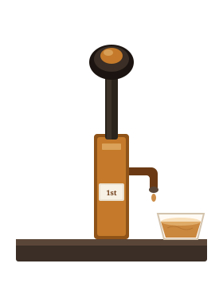

A campaign for real ale
The First Pint
A campaign to get 18–30 year olds — and anyone who has never come across it — drinking real ale.

Most people under thirty have never had a pint of real ale. Not because they rejected it. Because nobody offered them one that wasn’t warm, tired, or served with a lecture.
That is a failure of the trade, not of the generation.
Real ale is not a heritage exhibit. It is a living beer — unfiltered, unpasteurised, still working in the cask — pulled through a hand pump into a glass. When it is looked after, it tastes better than the stuff that comes out of a keg with extra gas. When it is not looked after, it tastes of wet cardboard and you never order it again.
The job is simple. Get the first pint right. Then they will come back.
The ask
What we are asking
If you have never tried cask ale, walk into a pub that keeps it well and ask for a third of whatever is on the hand pump. If you are a publican, pour that third without rolling your eyes. If you are CAMRA, help us find the pubs and the people who will do it properly.
Start here
A third at The Vine
Cask Ale Week has been and gone. The offer has not. Come to The Vine Inn, 11 Abingdon Road, Cumnor, Oxfordshire, any week you like, and ask for a first-pint third. We will pour whatever is in best condition that day and tell you what it is without a sermon.
The first pint is the only one that matters.
Get that right and the rest follows.